Semana 1 - Evidencias
Instalar MAMP
- Descargar e instalar MAMP.
- Configurar el puerto.
- Carpeta de trabajo:
htdocs.
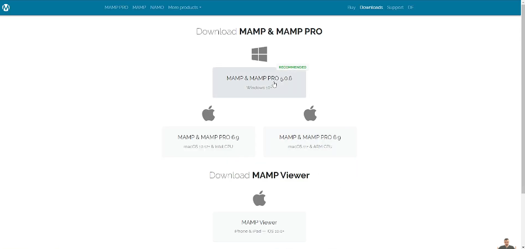
Paso 1
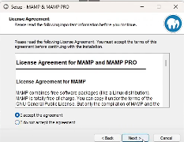
Paso 2
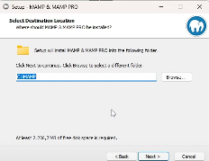
Paso 3
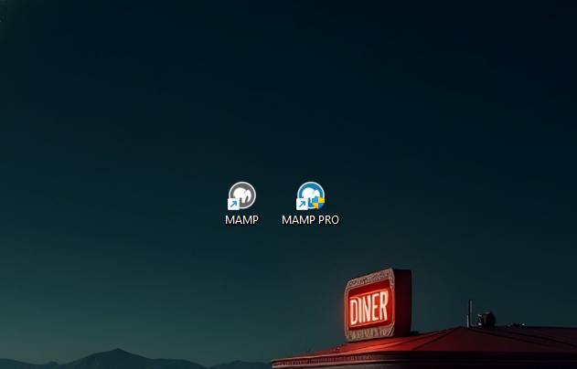
Paso 4

Paso 5
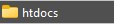
Paso 6
Instalar Visual Studio Code
- Descargar desde la página oficial.
- Instalar en el sistema.
- Agregar extensiones.
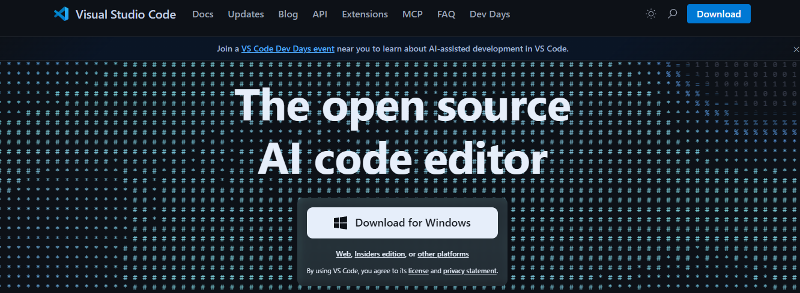
Paso 1
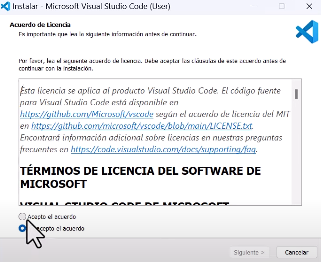
Paso 2
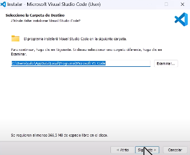
Paso 3
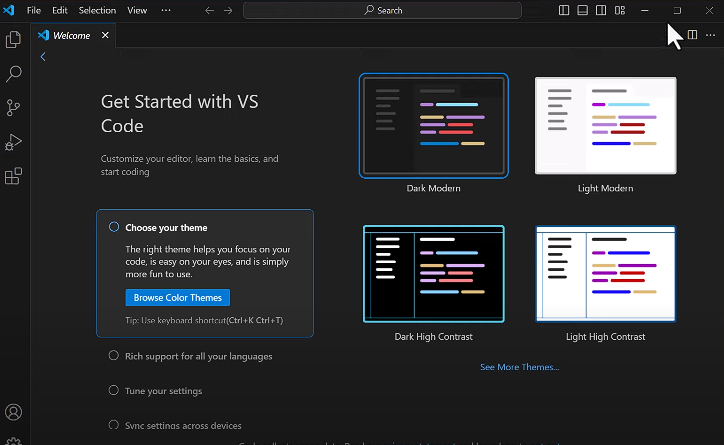
Paso 4

Paso 5
Paso 6
Carpeta de trabajo
Los archivos deben guardarse dentro de htdocs para ejecutarse desde el navegador.
Imagen de referencia: Carpeta de trabajo
Extensión de archivos
Los archivos de PHP se guardan con la extensión .php.

Imagen de referencia: Extensión .php
Editar código PHP
<?php
echo "Hola Mundo en PHP";
?>
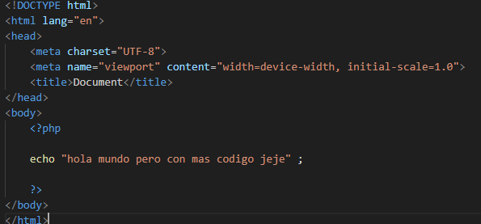
Imagen de referencia: Editando código PHP en VSCode
Guardar archivos
Los archivos deben guardarse en htdocs con extensión .php.
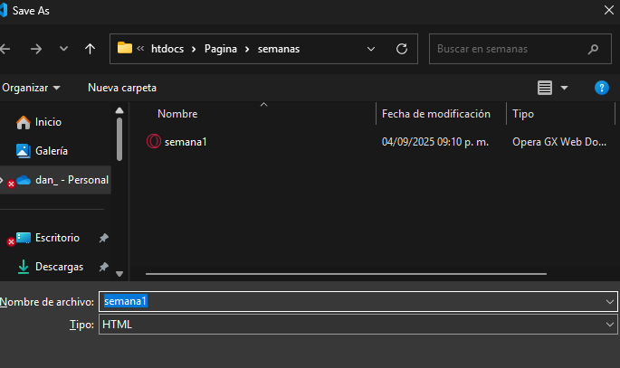
Cada archivo guardado que hagamos se mantendra en la carpea de htdocs que tiene MAMP la cual entramos anteriormente
Visualizar archivos
Se accede desde el navegador con http://localhost:8888/archivo.php
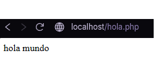
Imagen de referencia: Visualizar archivo en navegador
Variables en PHP
<?php
$nombre = "Juan";
$edad = 18;
echo "Mi nombre es $nombre y tengo $edad años.";
?>
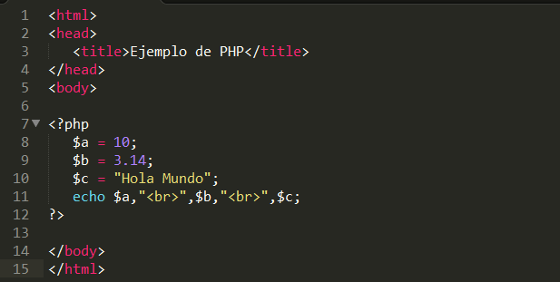
Imagen de referencia: Uso de variables